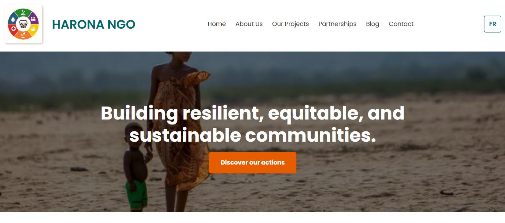
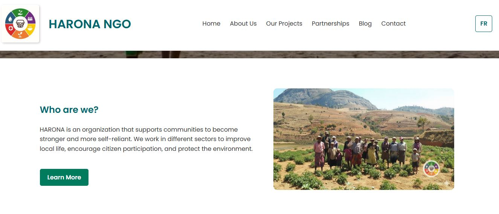
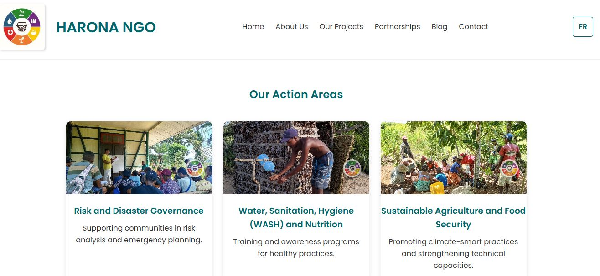
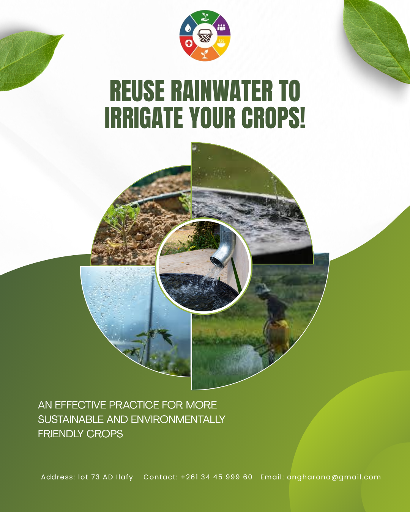
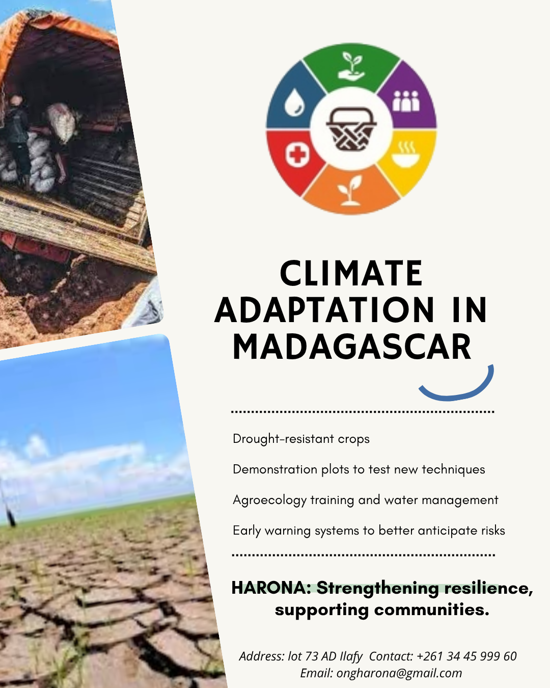
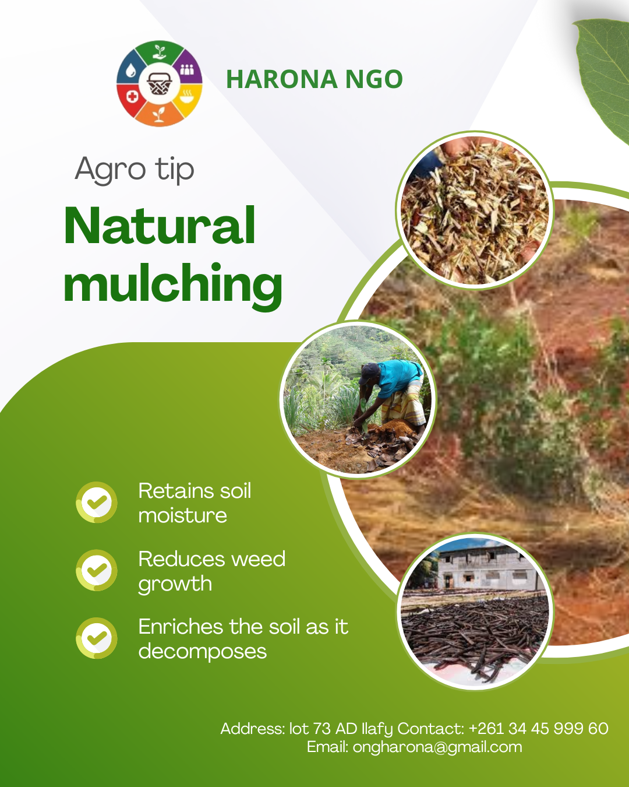

Contexte et Objectifs
L'objectif principal était de doter l'ONG d'une présence en ligne professionnelle et d'assurer une communication cohérente sur tous les supports. Ce projet démontre ma capacité à gérer à la fois le développement technique et la production de contenus visuels de marque.
Voir le site en direct : https://ongharona.vercel.app/
1. Développement et Intégration Visuelle (Site Web)
J'ai codé la plateforme officielle de l'ONG de manière autonome en utilisant HTML/CSS/JavaScript. Ce développement a impliqué l'intégration soignée des visuels de la marque pour garantir un aspect professionnel, essentiel pour l'autorité et la crédibilité.
a. Le Résultat Visuel et Technique

La bannière d'accueil, essentielle pour capter l'attention et communiquer la mission de l'ONG dès les premières secondes.


Vues des sections d'information et des zones d'action, démontrant une hiérarchisation claire du contenu pour faciliter la lecture.
2. Le Design pour l'Engagement (Canva - Réseaux Sociaux)
En parallèle, j'ai utilisé Canva pour créer une série de visuels pour les réseaux sociaux de l'ONG. Cette production régulière assure une communication active et homogène en ligne, cruciale pour l'engagement.



Sélection de visuels créés sur Canva pour les réseaux.
3. Conclusion : Un atout pour l'attraction client
Ce projet complet (Développement Web + Production Visuelle) illustre ma capacité à livrer des solutions qui inspirent confiance et facilitent la communication.
- Un Branding Cohérent : Le site et les réseaux sociaux sont alignés, renforçant l'autorité de l'expert.
- Efficacité du Contenu : Conception rapide de visuels d'engagement qui permettent d'attirer l'audience sans prospection excessive.